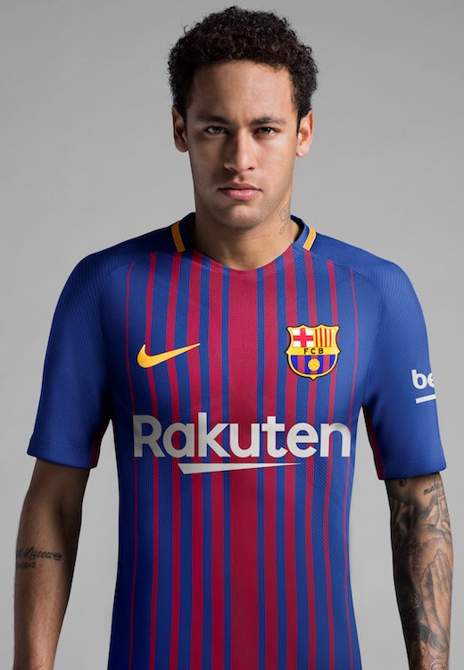
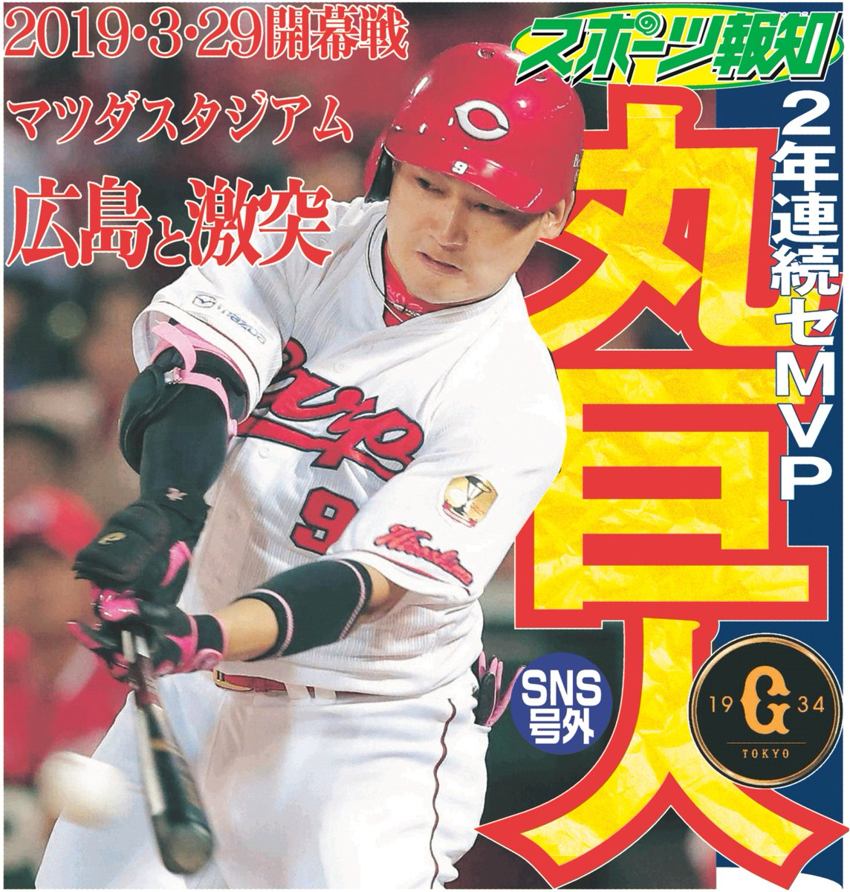

バイポーラとは?? モノポーラとは?
| 第一木谷：慢性左巧打者不足に悩み沈むBuffaloesに引き抜かせて、数年後にEaglesへ！？ | |||||
| Europe↠↠↠ | Ｃ→Ｂ→Ｅ 広島 大阪 仙台 | ↠↠↠USA ｴﾍﾝ(^J^) | |||
| しかしこの方角は、欧州に背を向けていた。 スペインとも仲良くしたい三木谷氏は、あえなく逆行させられ、 |  | ||||
| USA↠↠↠ ﾏｹﾁｯﾀ('Д') | Ｅ→Ｂ→Ｃ 仙台 大阪 広島 | ↠↠↠Europe | |||
| という、欧州衝突安全基準による⁉ 世界の流れに… ﾄﾗﾝｼﾞｽﾀﾉ ﾅｶﾞﾚﾆﾐｦﾏｶｾ～(*´ω｀*) | |||||
| 
| |||||
| 第二木谷〖モスフェット型トランジスタ〗：その頃、ドアラは Swalowsの友人 に会えずにいた。 |